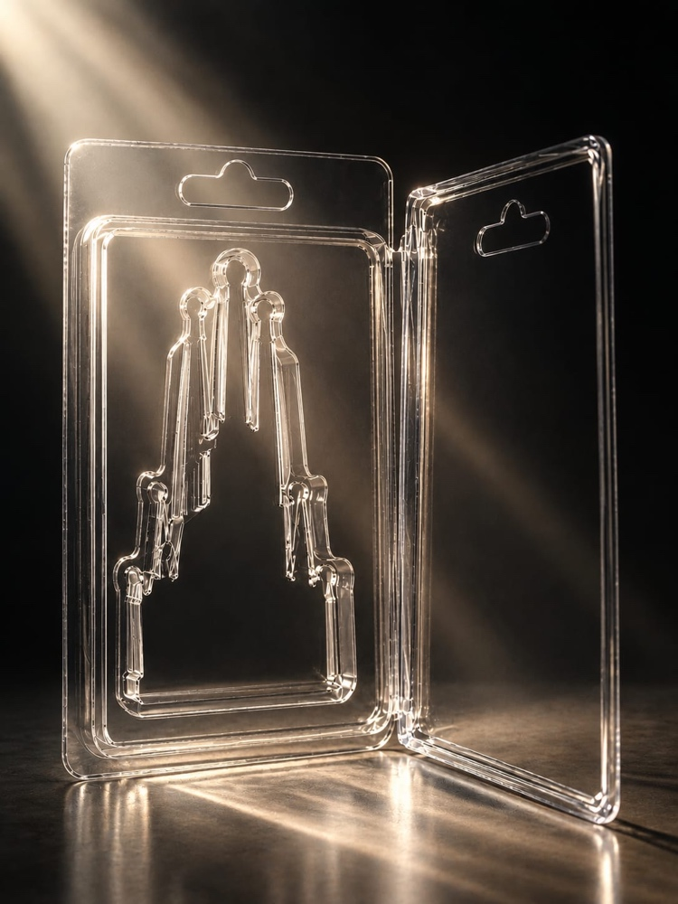

«El sagrado merchandising» – Juan Pablo Biazutti
Del 30 de octubre al 18 de diciembre de 2026
Próxima itinerancia: Marzo 2027, Galería Radionica (Belgrado)
Barcelona se ha convertido en una marca. Sus edificios, sus calles y sus monumentos forman parte de un catálogo de imágenes que el turismo consume y reproduce. A veces parece importar menos la arquitectura que la prueba de haber estado allí.
La Sagrada Familia cabe en un imán de nevera. Al abrir su envoltorio, queda el molde vacío, la forma de algo que ya no está. Quizás ahí empieza otra arquitectura: la que desaparece detrás de su propia imagen.
¿Qué vemos cuando miramos Barcelona? ¿La ciudad o su merchandising?
Una mirada colectiva y a la vez muy personal del mapa invisible de nuestra ciudad.
por Juan Pablo Biazutti
Horario de visita
Miércoles a Sábado: 18:30 h – 21:00 h
Domingo, lunes y martes: Cerrado
Artistas Participantes
18 miradas sobre el mapa invisible de la ciudad
Monti Alberdi
@montirri_
Ver obra →Joan Àvila
@art_joanavila
Ver obra →Agni Ayushatya
@ayushatya
Ver obra →Juan Pablo Biazutti
@biazuttiartdesign
Ver obra →Kathrin Boehme
Vecinos
Ver obra →Natalia Byrdina
@nbyrdina
Ver obra →Esteban Cornacchia
@estebancornacchia
Ver obra →DaGraVile
@dagravile
Ver obra →Marco DiGrandi
@marcodigrandi
Ver obra →Isabel Franco
@tikipost
Ver obra →Aniola Guilera
@aniola.guilera.art
Ver obra →Miren Huarte
@miren_hua
Ver obra →Dasha Koen
@dadashakoen
Ver obra →Cindy Kuijpers
@ckamsterdam
Ver obra →Elsa Lada
@elsa.lada
Ver obra →Kati Romeo Altimis
@katipainting
Ver obra →Julieta Vega
@juvega.art
Ver obra →Susanne Wehmer
@susanne_wehmer
Ver obra →